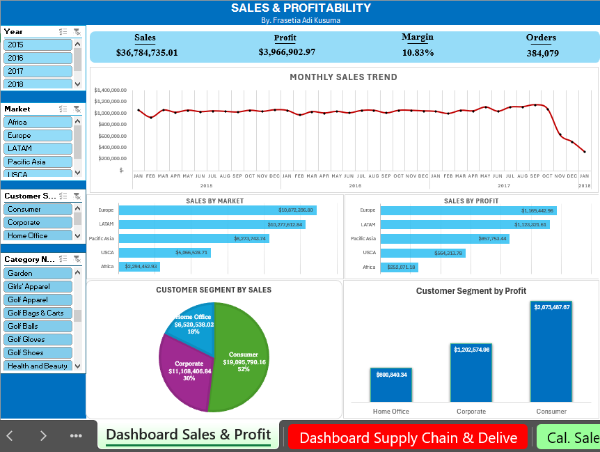
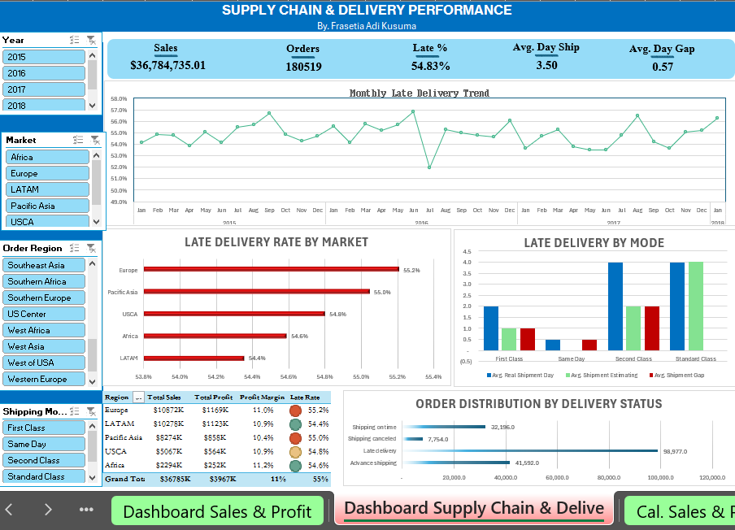
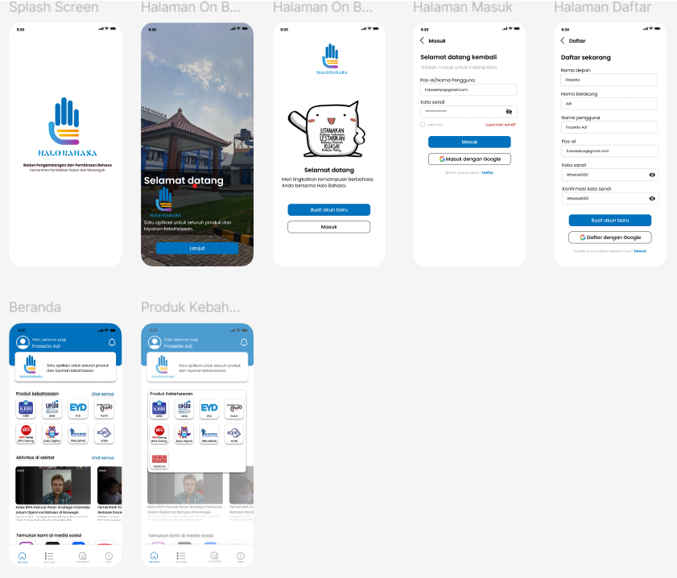
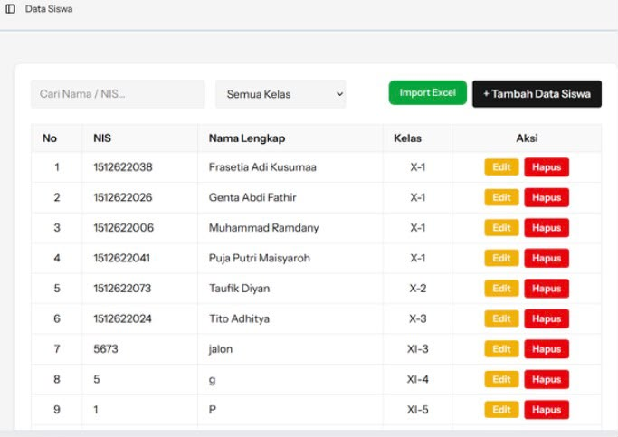
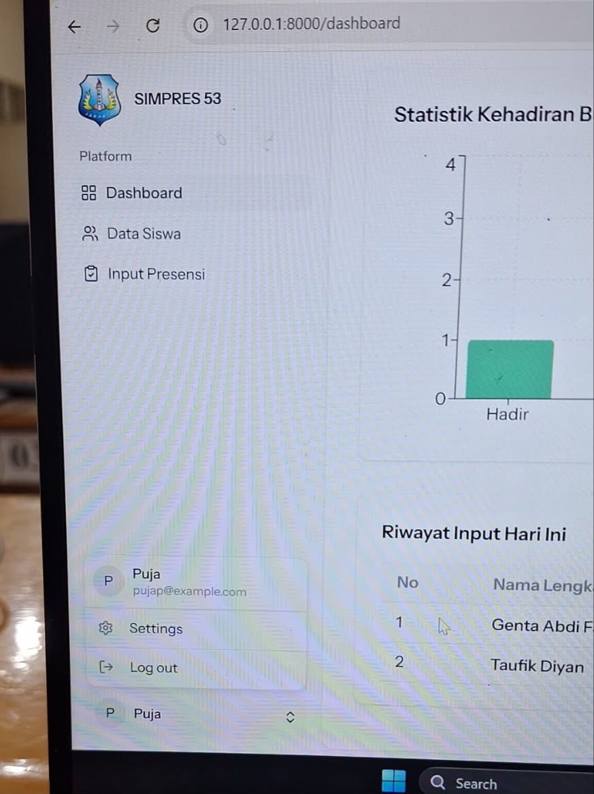
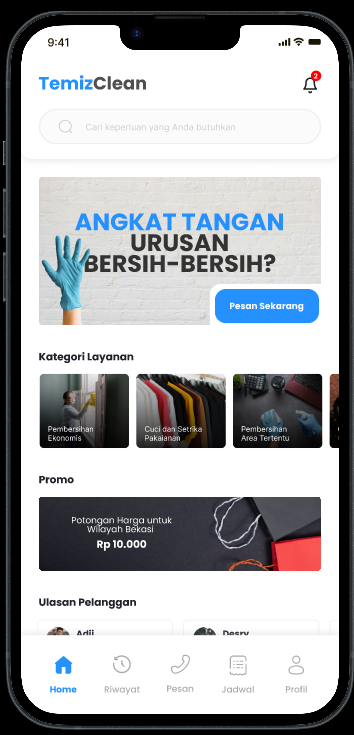

Bootcamp Data Analyst Vol. 7
Karirnex by PT Ebiz Karisma Internasional
Completed an intensive Data Analytics training program focused on data processing, exploratory data analysis (EDA), and business intelligence. The program equipped me with robust technical skills to transform raw data into actionable business insights.
Portfolio
Personal Project Data Analyst
Spearheaded the creation of an advanced supply chain analytics solution tracking 180,519 orders and $36.78M in revenue, providing actionable insights into shipping performance, fulfillment statuses, and regional transit efficiency.
Evaluated fulfillment efficiency by uncovering a 54.83% overall late delivery rate, analyzing shipping gaps across delivery modes, and tracking monthly fulfillment trendlines to optimize supply chain operations.

Tracked key financial indicators, identifying the Consumer segment as the primary revenue driver (52% of total sales / $19.09M) and highlighting regional profitability trends led by Europe ($1.16M profit).

HaloBahasa
HaloBahasa is an official application developed by the Badan Pengembangan dan Pembinaan Bahasa to serve as a unified platform for all language and literature products and services in Indonesia.

Redesigned and integrated key features within the HaloBahasa application to significantly improve the overall user experience. This update includes seamless authentication flows with Google sign-in integration (login, sign-up, and forgot password), an integrated timeline for language activities, dedicated user profile management, interactive notification features, as well as a complete redesign of the language reporting and consultation flow to ensure a simpler, more intuitive, and accessible interaction process.
Coursework Project Web App System Management Presensi SMAN 53 Jakarta
Developed a web-based student attendance and monitoring system (SIMPRES 53) as part of an academic coursework project running on a local server environment.


Designed an intuitive dashboard featuring visual attendance statistics charts, streamlined data input workflows, and comprehensive student management menus. Implemented core features including Daily Presence Input, Student Data management, Daily Input History logs, and user profile settings (Settings and Logout functionalities).
Coursework Project Design App with Figma
TemizClean is a web app that allows users to easily schedule and manage on-demand cleaning services for their homes.

Designed the user interface and user experience for TemizClean, an on-demand cleaning service application, as part of an academic coursework project using Figma.